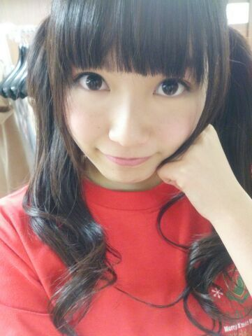

| 2013/12 22 Sun | ひめたん(*>ω<*)そ の384 |
UTB vol.218
昨日発売です！
みせていただいたのですが
ちょっといい感じです(・∀・)/
ひめたんは普段はあんまり
自信がなくてこーゆーこと言わないけど
UTBはぜひチェックしてほしいな◎
よろしくねー

乃木坂46 Merry X'mas Show 2013
来てくださったみなさん
Amebaで応援してくださったみなさん
ありがとうございました∩( ^ω^ )∩
ご来場のみなさんは
雨の中、寒い中来てくださったって聞きましたが
風邪ひいてない？心配よー

今回のライブTシャツだよ☆
みなさんはゲットしたかなー？
セットリストは
かなりん (中田花奈ちゃん)ブログまでー
とゆーことで
乃木坂ちゃん初の武道館ライブはいかがでしたか？
クリスマスメドレーしたり
みんなお揃いのサンタさんの衣装着たりと
クリスマスならではの演出がたーくさーんでした！
雪降ってきたもんね＊＊
いちばん最後の 君の名は希望 で
武道館でみなさんと大合唱できたことは
一生の思い出になりました( ´ ▽ ` )
武道館は２階のいちばん上まで
みなさんのおかおがびっしり見えて
安心できるような、緊張するような......
いつもならステージに立つと冷静になれるけど
今回はだいぶテンパってたのん(´・ω・｀)
でもそのぶん
やりきったー！って達成感もステキでした
これがライブの醍醐味ってやつですかね！
サプライズ発表
2014年2月22日 横浜アリーナ
また大きなステージを用意していただきました！
いつも応援してくださるファンのみなさん
支えてくださるスタッフさんのおかげであり
大好きなメンバーみんなの努力が
そうさせてるのかなーと思います
武道館では個人的に
反省点がたくさんあるのですが
これからもっともっと成長するための
糧になってくれるのかな。
横アリではさらに成長した私たちを
見てもらえるようにがんばると同時に
ひとつひとつの現場を大切にしていこうと
改めて感じた１日でした。
真面目モードでした( ´ω` )

ばかりぼん。
れなち (山崎怜奈ちゃん)
似顔絵ありがとーヽ(；ω；)ノ
昨日はジャンプフェスタに
シークレットゲストとして登場、
月の大きさ 披露させていただきました！
岸本斉史先生、平健史先生
竹内順子さん、杉山紀彰さん、
井上和彦さん、中村千絵さん
ありがとうございました( ；∀；)
そしてNARUTOファンのみなさんが
あたたかく迎えてくださって
あらためてNARUTOパワーを感じました☆
最後はみんなで「螺旋丸！」をしました
楽しい時間をありがとうございましたっ
今日はMUSIC FOR All,All FOR ONE 2013
去年に引き続き呼んでもらえるなんて
嬉しいな(＊^ω^＊)
行くよーって方はよろしくお願いします！

 真夏さんブログに出てくる
真夏さんブログに出てくる
戦闘モードひめたんは戦闘力いくつですか？
あのひめたんは弱いでしょうね。
余談だけど真夏の携帯フォルダの中に
戦闘モードまなったんもいるよ♪♪
余談だけどね、フリとかではぜんっぜんなくて
ただの余談だけどね。
ひめたんビームを避けて
剥がしの方に当たったらどうなりますか？
そんなこと聞いていいんですか？
聞いちゃっていいのかなー？
なーんてーそうですねー
ひめたんと握手来てくれた方とで
お話楽しんでるところを
涼しい顔して剥がしてくださるくらいだから
びーむなんて効かないんじゃないかな(´・ω・｀)
質問なんですが、ひめたん的に見て欲しい
乃木ここ＆乃木どこはどの回ですか？
◎乃木ここ 2012年5月31日(木) UP
アンダーメンバーだけで行う、
スタジオトーク企画No.4！
◎乃木どこ 2013年1月13日(日) OA
占いで仕事運＆金運＆プライベート丸裸
最近のを除いたらこんな感じかなー
乃木ここではびーむして、乃木どこでは歌ってます
ぜひ観てみてね♪♪
ひめたんって機械が調子悪い時
叩いて直そうとするタイプ？
それともちゃんと電気屋さんに聞く？？
叩いてなおすタイプかな
ひめたんはできる子なので、
ほんとになおったりします(＊^^＊)
なおらなかったら捨てるタイプ←
ひめたんはサービスエリアとか好き？
すきー！わかる！
バスで遠征したことがあるけど
途中サービスエリアに着いた時の
わくわくする感じがいいよね！
何を買うわけでもないし用もないんだけど
なんかわくわくするっ
最近ひめたんの握手会いきたすぎるけど
どうすれば？？
おーいーでーよー
きっと楽しいよ(＊・・＊)待ってるお
ひめたんってガムを最終的に飲み込む人？
それとも紙にくるんで捨てる人？
まさか、ガムを噛んだことない人？
ちょっと待って落ち着いて？え、なんだって？
ガムを飲み込む方がいらっしゃるの？
危ないからやめてくださいねがちで(´・ω・｀)
ひめたんは普通に捨てますよー
チョコと一緒に噛んだらガムとけるらしいねー
いつもコメントありがとうございますっ
昨日もねお風呂に浸かりながら
じーくり読んだんだよー♪♪
(＊´・ω・＊)
コメント(408)
2013/12/22 12:42